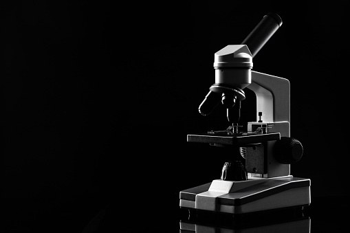

Five tests.
Every batch.
Every batch is tested by an independent, certified laboratory before we sell it. No exceptions. Here is what they check.

What each test is for.
HPLC-UV for purity, LC-MS for identity, sterility testing, endotoxin testing by LAL assay under USP chapter 85, and chemical contaminant screening.
How much of it is the peptide
Separates the powder into its parts and measures each one. Tells you what percentage is the peptide you ordered, and what is not.
Whether it is the right peptide
Weighs the molecule. Every peptide sequence has its own mass, so the result either matches the name on the label or it does not.
Whether anything is growing in it
Checks the batch for living microorganisms. A clean result means nothing grew.
What bacteria may have left behind
Bacteria leave fragments behind even after they die. The LAL assay, run under USP chapter 85, puts a number on how much is there.
What else ended up in the vial
Screens for chemicals left over from making the peptide, so what you get is the compound and nothing extra.
We do not test our own products.
A result we produced ourselves would prove nothing. So we do not produce one.
Glow does not manufacture, does not run a laboratory, and does not write certificates. A certified independent laboratory does the testing and signs the certificate.
Every certificate covers one batch, and that batch number is printed on your vial. Match the two and you know the document is about the vial in your hand, not a sample from last year.
Want it confirmed? Take the report number on the certificate to the laboratory that issued it. Check it with them, not with us.